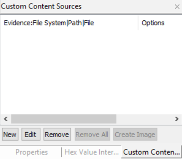
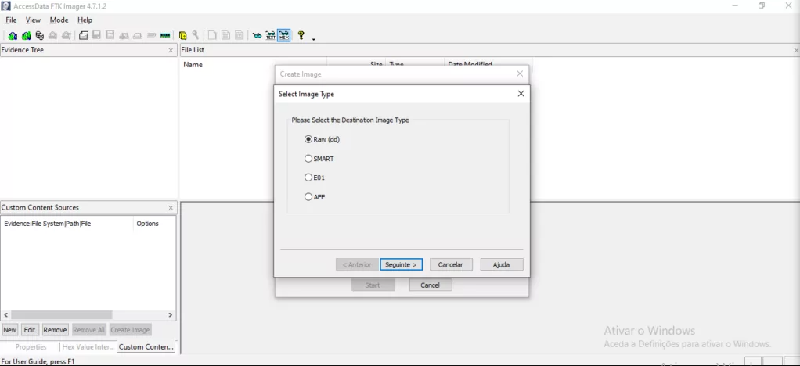
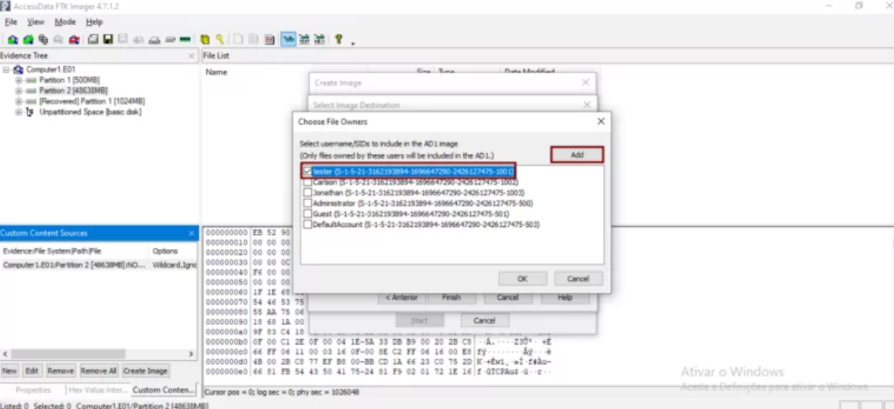
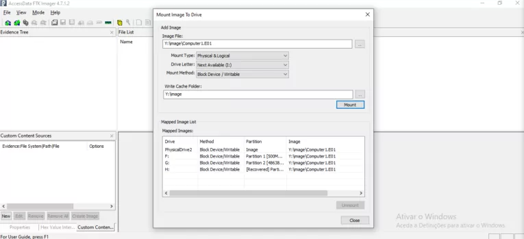
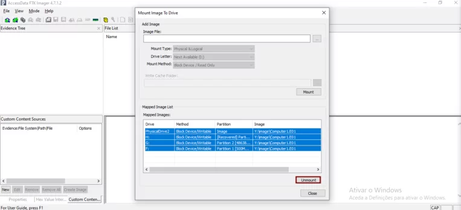
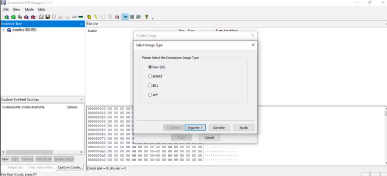
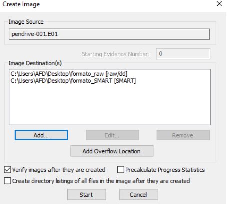

◉ FTK Imager: Principais funções
◉ Introdução
O FTK Imager é uma ferramenta gratuita de Forense Digital gratuita desenvolvida pela AccessData. Ela possui
recursos especialmente para a aquisição da evidência derivadas de unidades de armazenamento, contudo a ferramenta
não possui muitos recursos desenvolvidos para realizar o processamento de dados e informações. Sendo necessário
submeter o resultado para ferramentas como IPED, Autopsy, ou similar.
◉ Interface Gráfica da ferramenta
A interface gráfica do FTK Imager é totalmente modular, sendo possível movimentar e redimensionar cada um dos
painéis.
O FTK Imager possui diversas ferramentas as quais possuem seus atalhos com o objetivo de aumentar a produtividade
do examinador, ou seja, é possível realizar um procedimento por mais de um caminho.
◉ Menu
A partir do painel ‘Menu’ é possível acessar todos os recursos do FTK Imager, ele é composto por outros quatro
botões, sendo eles ‘File’, ‘View’, ‘Mode’, e ‘Help’, os quais por sua vez possuem seus próprios botões.
◉ File
A partir do menu ‘File’ é possível acessar todas as funcionalidades que estão presente na ‘Toolbar’.
◉ View
O menu ‘View’ está relacionado ao gerenciamento da interface gráfica, ou seja, painéis exibidos, formato de
listagem de conteúdo, bem como se necessário a redefinição das configurações gráficas.
◉ Mode
O menu ‘Mode’ está diretamente ligado ao painel ‘Viewer’ o qual irá interpretar o conteúdo do arquivo de acordo
com o modo escolhido e mostrar o conteúdo dele. Observe que é possível encontrar as seguintes opções na ‘Toolbar’.
Em resumo, o modo ‘Automatic’ irá escolher automaticamente o modo de exibição, o modo ‘Text’ irá exibir o
conteúdo do arquivo em formato de texto e mesmo se que o arquivo não seja propriamente um arquivo de texto
é possível visualizar os dados de texto deste arquivo, e o modo ‘Hex’ ao qual exibira o conteúdo em formato
hexadecimal.
◉ Help
O menu ‘Help’ fornece acesso ao manual do usuário do FTK Imager, e detalhes sobre a versão do FTK Imager.
◉ Toolbar
O menu ‘Toolbar’ contém todas as funcionalidades presente no ‘Menu’, é um atalho para as principais funcionalidades
do FTK Imager.
◉ Evidence Tree
Esse painel da ferramenta exibe as evidências adicionadas de forma hierárquica no formato de árvore, na raiz
da árvore estão as fontes da evidência e abaixo da mesma é mostrado as estruturas, pastas e arquivos que ela
possui.
Quando determinado conteúdo é selecionado ele é exibido no painel ‘File List’, algumas informações sobre o
arquivo podem ser visualizadas no painel ‘Properties’, e se possível seu conteúdo será exibido no
painel ‘Viewer’.
◉ File List
O painel ‘File List’ irá listar todas as pastas ou arquivos presentes dentro da estrutura selecionada no
painel ‘Evidence Tree’.
◉ Combination Pane
Este painel é uma combinação de outros três painéis, sendo eles, Properties, Hex Value Interpreter, e Custom
Content Sources.
◉ Properties
Esse painel da ferramenta exibe diversas informações sobre o item selecionado, tanto no painel ‘Evidence Tree’
quanto no ‘File List’.
◉ Hex Value Interpreter
Esse painel permite interpretar os valores hexadecimais de uma estrutura de arquivo, ou sistema de arquivo de
acordo com os bytes selecionados no painel ‘Viewer’. Observe que independente dos bytes selecionados haverá
uma interpretação, ou seja, para tirar proveito dela é necessário conhecer a estrutura dos formatos de arquivos,
sistemas de arquivos, entre outros.
◉ Custom Content Sources
Esse painel será utilizado para selecionar e gerenciar o conteúdo personalizado que será feito a aquisição em
uma aquisição personalizada.

◉ Viewer
Esse painel servira para visualizar o conteúdo das estruturas e arquivos de acordo com o modo de exibição
disponível. Observe que cada modo selecionado permite algumas opções, em especial o modo hexadecimal, que
permite realizar buscas por valores específicos, utilizar expressões regulares, entre outras funcionalidades.
◉ ATENÇÃO
Segundo a AccessData não é recomendado utilizar o FTK Imager com uma conexão ativa de internet, pois existe
um risco relacionado à segurança ao visualizar um conteúdo HTML, a desenvolvedora referência o boletim de
segurança da Microsoft MS09-054, que por sua vez referência a CVE-2009-2529.
◉ Sistemas de arquivo e formatos de imagem suportados
O FTK Imager consegue identificar e analisar diversos formatos de imagem, bem como sistemas de arquivos.
◉ Sistemas de arquivos suportados
Dentre os sistemas de arquivos suportados pelo FTK Imager estão, APFS, CDFS, exFAT, Ext2FS, Ext3FS, Ext4FS,
FAT12, FAT16, FAT32, HFS, HFS+, NTFS, ReiserFS3, VXFS e XFS.
◉ Formatos de imagens suportados
Dentre os formatos de imagens suportados pelo FTK Imager estão, Encase, Safeback 2.0, raw/dd, Ghost, AccessData
Logical Image (AD1), SnapBack, Expert Witness, ICS, SMART, Advanced Forensics Format (AFF).
◉ Trabalhando com evidências e imagens
A ferramenta FTK Imager permite visualizar e evidencia e a partir dela criar imagens forense, criar imagens
personalizadas (AD1), exportar arquivos específicos e muito mais.
Lembre-se sempre que quando estivermos trabalhando com a evidencia original, ou a cópia dela, é necessário
possuir garantias que ela não será alterada, com isso em mente lembre-se sempre de utilizar bloqueador de
escrita, de preferência um baseado em hardware por proporcionar uma maior confiabilidade, contudo é possível
utilizar um baseado em software.
◉ Realizando uma aquisição
Como mencionado anteriormente sempre que estivermos trabalhando com a evidencia original ou sua cópia é
extremamente necessário que seja utilizado um bloqueador de escrita, em nosso exemplo será utilizado um
bloqueador de escrita baseado em software.
Observe que existem diversos cenários possíveis e será necessário se adaptar aos mesmos, a seguir será mostrado
uma das formas para realizar uma aquisição de disco.
Com o software aberto basta utilizar a opção “Create Disk Image…”
Na tela seguinte da ferramenta irá será necessário selecionar o tipo da evidência de origem.
◉ Physical Drive
Essa opção irá tratar a evidencia de origem como um disco físico, ou seja, todo o conteúdo relacionado a camada
física será interpretado. Por exemplo, um disco com mais de uma partição essa opção irá capturar o disco inteiro
e consequentemente as partições.
◉ Logical Drive
Essa opção irá tratar a evidencia de origem como um disco lógico, ou seja, todo o conteúdo relacionado a camada
lógica. Por exemplo, uma partição de um disco.
◉ Image File
Essa opção permite selecionar uma imagem, será muito utilizada para adicionar imagens forense ao FTK Imager.
◉ Contents of a Folder
Essa opção da ferramenta permite que seja realizado uma aquisição de uma determinada pasta ou arquivo.
Para exemplo será utilizado a opção ‘Physical Drive’ a qual geralmente sera utilizada para realizar a aquisição
de um disco inteiro.
Nesta tela selecione o disco ao qual deseja realizar a aquisição.
Na tela seguinte da ferramenta será questionando o local de destino da imagem gerada, lembre-se de observar o
espaço que a evidencia original possui e consequentemente o espaço que irá ocupar no destino, observe o formato
da imagem a qual pode contribuir para que o espaço ocupado seja menor ou maior. Contudo é possível selecionar
um local para armazenar os arquivos ou a imagem caso a capacidade da fonte de destino seja completamente
preenchido, em adição é possível selecionar mais de um local de destino, possibilitando criar mais de uma
cópia da evidencia.
Esta tela possui ainda três opções, sendo elas:
◉ Verify images after they are create
A opção irá realizar a verificação da integridade da mídia original com a imagem criada após que o processo
terminar, é possível realizar o mesmo procedimento utilizando a opção ‘Verify Drive/Image…’.
◉ Create directory listings of all files
A opção irá criar um arquivo no formato Excel o qual irá possuir o nome e caminho de todos os arquivos da
evidencia.
◉ Precalculate Progress Statistics
A opção irá mostrar na ferramenta um tempo estimado para que a procedimento seja concluído.
No exemplo foi utilizado somente a opção para verificar a integridade da evidência.
Nesta tela basta selecionar o formato de imagem desejado, como observado é possível criar uma imagem nos
seguintes formatos raw/dd, SMART, E01 e AFF.

O preenchimento da tela a seguir é opcional, contudo, é importante realizar o preenchimento para garantir uma
boa identificação e cadeia de custodia.
Na tela seguinte da ferramenta será selecionado o local que será armazenado a imagem, nome, fragmentação,
compressão e criptografia AD. Será utilizado a opção de criptografia AD somente para mostrar o seu funcionamento,
não sendo necessário utilizar a opção em uma aquisição, apesar de ser uma boa prática de segurança.
Na tela seguinte basta inserir uma senha ou utilizar a opção de certificado.
Para realizar a descriptografia basta inserir a imagem no FTK Imager com a opção ‘Add Evidence Item..’ que
será solicitado a senha, ou utilizar a opção ‘Decrypt AD1 Image..’.
Após ser concluído esses passos será retornado a tela da Figura 19 na ferramenta, a qual clicando em ‘Start’
irá começar a aquisição.
Com o processo de aquisição finalizado será aberto a tela de verificação de integridade.
Também é possível acessar o sumario da imagem na ferramenta, o qual irá conter as informações inseridas na
figura 21 e outras informações. Observe que o conteúdo mostrado nessa tela é o mesmo que estará presente no
arquivo TXT que foi gerado no mesmo caminho e com mesmo nome da imagem criada.
Realizando uma aquisição personalizada
No FTK Imager é possível realizar uma aquisição personalizada (AD1), ela permite escolher pastas e arquivos
específicos, e ainda conta com recurso de filtro de conteúdo.
Observe que na ferramenta FTK Imager realiza a recuperação de alguns arquivos de forma automático, eles são
identificados com um ‘X’ em vermelho em seu ícone. Sendo possível selecionar estes arquivos e realizar uma
aquisição personalizada ou exportar esses arquivos com a opção ‘Export Files…’.
Para realizar uma aquisição personalizada é necessário possuir uma evidencia conectada ao FTK Imager, com
isso basta selecionar a pasta ou arquivo e utilizar a opção ‘Add to Custom Content Image (AD1)’, em seguida
será criada uma entrada no painel ‘Custom Content Sources’.
Porém realizar esse processo pode demorar muito ou ser inviável, a depender do caso e para isso é possível
utilizar a opção de filtragem de conteúdo, basta criar uma entrada ou selecionar uma existente e clicar
em ‘Edit’.
Será aberto uma janela na qual possui algumas opções para filtragem de conteúdo, sendo eles:
◉ Interrogação (?)
A interrogação irá realizar a busca substituindo um caractere por qualquer outro.
◉ Asterisco (*)
O asterisco irá realizar a busca substituindo uma sequência de caracteres por quaisquer outros.
◉ Barra Vertical (|)
A barra vertical servirá para separar diretórios e arquivos.
Além destes três filtros é possível utilizar em conjunto com algumas opções, sendo elas:
◉ Ignore Case
Irá ignorar o case sensitive.
◉ Include Subdirectories
Ira incluir todos os arquivos e subdiretórios abaixo da pasta especificada.
◉ Match All Occurrences
Irá realizar a busca em todos os diretórios da evidência pela expressão utilizada.
Após configurado o filtro basta clicar em ‘Ok’ e em seguida ‘Create Image’, observe que os primeiros passos
são similares ao que já foi tratado, basta seguir os passos conforme já descrito.
Observe que na tela a seguir é possível realizar mais um filtro, desta vez pelo dono (SID).
Nesta tela é possível adicionar ou selecionar um usuário e seu respectivo SID no sistema, ou seja, o filtro
configurado irá realizar as buscas para o SID selecionado.

Para não se alongar em etapas que já foram vistas, iremos pular direto para o resultado da aquisição
personalizada.
Com a aquisição personalizada concluída iremos abrir a imagem ad1 para verificar o resultado. E como visto o
filtro realizou a aquisição dos arquivos ‘.jpg’ relacionados ao usuário ‘tester’.
Realizando a aquisição da memória ram
A aquisição da memória ram será utilizada para os casos em que o sistema se encontre ativo, com isso em mente
será necessário executar o FTK Imager a partir de um dispositivo de armazenamento removível e com bloqueador
de escrita.
Na tela seguinte da ferramenta basta selecionar o nome e o destino da captura, selecionar se deseja o arquivo
de paginação e em seguida iniciar o processo de captura.

Com o processo finalizado basta submeter essa captura em uma ferramenta especifica para análise forense em
memória ram, por exemplo, Volatility.
◉ Montando Imagens
Esse recurso permite que imagens forense sejam montadas como unidades lógicas ou dispositivos físicos, pode
ser muito útil para determinadas ferramentas que só possuem suporte para analisar discos físicos. Em resumo
os formatos de imagens suportados são raw/dd, E01, S01, AFF, AD1 e L01. Sendo possível montar as imagens
especificamente de duas formas:
◉ Montagem Lógica
Os formatos AD1 e L01 por se tratarem de conteúdo personalizado, e não possuírem os dados da camada física, só
é possível monta-las no formato logico.
◉ Montagem Física
Os formatos E01, S01, AFF e raw/dd permitem que sejam montados como físicos, pois esses tipos de imagens permitem
que os dados da camada física sejam adquiridos, ou seja, para que seja possível montar uma imagem como física é
necessário que no momento da aquisição o examinador tenha utilizado a opção de aquisição da camada física.
Para realizar a montagem de imagem será utilizado a opção ‘Image Mouting…’
Na tela que será aberta será necessário selecionar a imagem a ser montada, bem como suas configurações. Em
especial o método de montagem, sendo eles:
◉ Block Device/Read Only
Irá realizar a montagem no modo somente leitura, esse modo irá montar a imagem como um dispositivo de bloco,
ou seja, só irá funcionar para softwares que lê o nome físico. Para realizar o teste basta utilizar o próprio
FTK Imager e adicionar uma evidencia do tipo físico, a imagem montada será mostrada como um disco nas opções.
◉ Block Device/Writable
Irá realizar a montagem com a proteção de escrita, contudo é possível realizar modificações em seu conteúdo que
serão salvas em um arquivo de cache que será criado.
◉ File System/Read Only
Irá realizar a montagem no modo somente leitura, esse modo irá montar a imagem como estruturas lógicas, os quais
poderá ser visualizado com algum explorador de arquivos.
Para realizar a montagem basta selecionar as opções conforme desejado e em seguida clicar em ‘Mount’.

As partições relacionadas à imagem serão montadas e será possível visualizá-las, conforme visualizado na figura
a seguir.
Para desmontar as estruturas criadas basta selecioná-las e clicar em ‘Unmount’.

◉ Obtendo os arquivos de registro protegido na ferramenta
Os arquivos de registro possibilitam adquirir diversas informações sobre o sistema, usuário, entre outras
informações. O sistema operacional bloqueia que os registros ativos sejam salvos ou modificados, contudo, o
FTK Imager burla o sistema de proteção de arquivos do Windows, permitindo que seja possível realizar a aquisição
desses arquivos de registro ativos.
Em um sistema ativo é necessário ter todos os cuidados relacionados a integridade da evidencia, bem como as
necessidades do cenário. Em um sistema ativo com a proteção de escrita, e a execução do FTK Imager a partir
de uma mídia removível, será utilizado a opção ‘Obtain Protected Files…’.

Na tela da ferramenta que será aberta será exibido um aviso no qual já foi mencionado acima, e as opções de
destino, e outras duas opções:
◉ Mimimum Files for login recovery
Recupera os usuários, e os arquivos de registro ‘system’ e ‘SAM’ dos quais é possível utilizar para recuperar
as informações de conta de um usuário.
◉ Password recovery and all Registry Files
Recupera os usuários, e os arquivos de registro ‘system’, ‘SAM’, ‘NTUSER.DAT’, ‘Default’, ‘Security’, ‘Software’
que podem ser utilizados para recuperar informações da conta e possíveis senhas.
Lembrando que é possível realizar a aquisição desses arquivos de forma manual, adicionando a evidência e criando
uma imagem personalizada com os arquivos desejados, ou exportando esses arquivos.
◉ Convertendo imagem
O processo de conversão de imagem é muito similar ao processo de uma aquisição que já foram mostradas, para evitar
se alongar o foco será nas telas mais importantes.
Primeiramente, será adicionado a evidência a qual desejamos converter e em seguida, será utilizado a opção ‘Export
Disk Image…’.
Na tela a seguir é possível selecionar o formato ao qual deseja converter a imagem.

Observe que é possível adicionar mais de uma entrada de destino na ferramenta, assim permitindo que sejam criadas
imagens em mais de um formato, sem a necessidade de fazer o processo manual novamente.

Concluindo o processo de aquisição, as imagens serão salvas no local de destino especificado e estarão prontas
para serem utilizadas.
◉ Conclusão
O projeto de pesquisa demonstrou as principais funcionalidades do FTK Imager, bem como exemplos de utilização
destes recursos. Sendo possível concluir que o FTK Imager é uma ótima ferramenta para realizar aquisições nos
mais diversos sistemas de arquivos, e tipos de mídia. Contudo a mesma deve ser utilizada em conjunto com outras
ferramentas de indexação e processamento de evidencias, como por exemplo o IPED, Autopsy, ou similares.